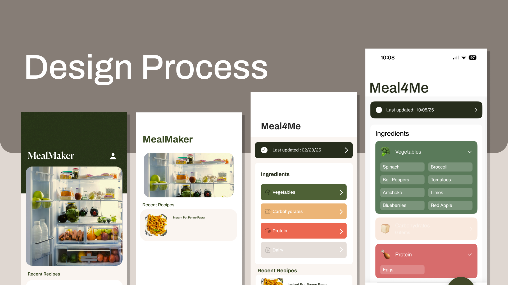

Meal4Me · AI Recipe Assistant
Combine skills in software development, design, and business to brainstorm ideas, create prototypes, and present working solutions.
Stormhacks is a hackathon hosted by SFU Surge that brings together designers and developers to publish a product within 24 hours. The main constraint was whether an idea could realistically be executed in that time, with the only requirement being to deliver a pitch.
Role
Visual Designer
Product Concept
User Experience
Timeline
24 Hours // Fall 2025
Tools
Figma
Adobe CC
The Concept
A stepping stone towards a home cooked meal
Meal4Me is an app that encourages young adults to make home cooked meals by removing the friction that comes with figuring out what to make with what's available. Our team wanted to address a challenge faced by many students, identifying food waste and meal planning as persistent issues. With this app, users simply take a photo of their fridge and curate personalized, college-level recipes.
My Role
As lead creative designer, I drove most of the early stages of the project, including ideation, product design, and user journey mapping. Through rapid exploration and iteration, the team prioritised functionality and clarity, keeping the work concise so developers could execute confidently within the time constraint. Communication stayed consistent as implementation progressed, reducing confusion and opening up opportunities for innovation.
Problem
Design Paralysis
Our team kept adding features, from ingredient substitutions to more catered recipe generation to freezer tracking. Before long, the app had become bloated and unfocused. The solution was to focus ruthlessly on the core flow: Scan, Review, Cook. We learned that simplicity isn't about doing less, but about doing what matters most.

Reflection
End Result
My time with this project allowed me to strengthen my skills in design and reflect on the importance of experience. This app demonstrates my ability to work efficiently and collaborate effectively with others of different strengths.